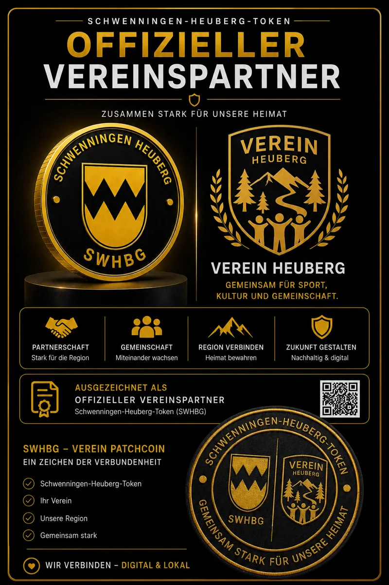
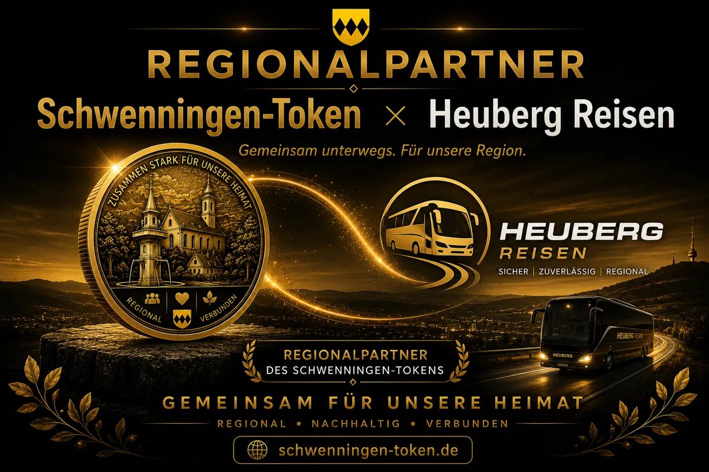
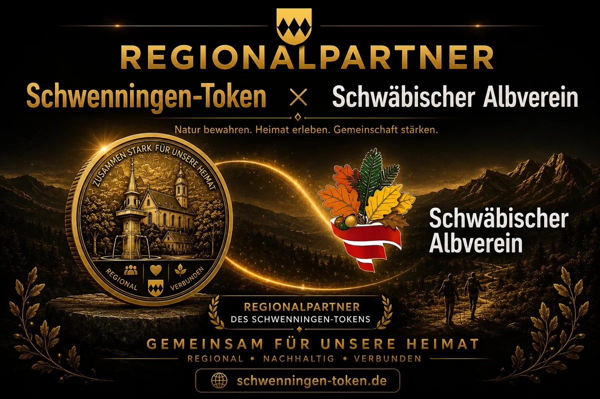

REGIONALPARTNER
Gemeinsam für
Schwenningen.
Regionalpartner sind als freiwilliges Netzwerk rund um den Schwenningen Token gedacht. Lokale Geschäfte, Vereine, Gastronomie, Events und Anbieter können Teil einer sichtbaren digitalen Community-Idee werden.
Interesse bekundenZur StartseiteDie Idee dahinter
Der Schwenningen Token soll nicht nur ein digitales Symbol bleiben. Langfristig kann daraus ein freiwilliges regionales Netzwerk entstehen, das Menschen, Orte, Vereine und lokale Anbieter miteinander verbindet.
Regional sichtbar
Lokale Akteure können Teil einer modernen digitalen Regionalidee werden.
Kreative Aktionen
Denkbar sind kleine Community-Aktionen, symbolische Vorteile oder besondere Ideen.
Freiwilliges Netzwerk
Alles bleibt freiwillig, unkompliziert und ohne Verpflichtung.
Regionalpartner sichtbar machen
Das Regionalpartner-Konzept soll greifbar, sichtbar und emotional werden. Partner können später individuell als Teil der Community dargestellt werden.

Mehr als nur ein Logo
Das Regionalpartner-Konzept verbindet digitale Community mit echter regionaler Identität. Durch individuelle Partnerposter entsteht Sichtbarkeit, Wiedererkennung und ein gemeinsamer Auftritt innerhalb des Netzwerks.
Individuell für jeden Partner
Später können eigene Versionen für Vereine, Gastronomie, Events, Geschäfte oder regionale Projekte entstehen. So wird jeder Partner sichtbar Teil der Schwenningen-Community.
Digital & lokal verbunden
Die Poster verbinden moderne Web3-Optik mit Heimat, Gemeinschaft und regionalem Charakter. Genau daraus entsteht die besondere Identität des Projekts.
Beispielhafte Regionalpartner
So könnten künftige Regionalpartner innerhalb der Schwenningen-Community präsentiert werden.

Ihr Betrieb?
Hier könnte künftig Ihr Unternehmen, Geschäft, Café, Handwerksbetrieb oder Ihre Organisation stehen.

Ihr Verein?
Hier könnte künftig Ihr Verein, Ihre Initiative oder Ihr regionales Projekt sichtbar werden.
Mögliche Partnerbereiche
Das Regionalpartner-Netzwerk ist offen gedacht. Es geht nicht um ein offizielles Zahlungssystem, sondern um regionale Verbundenheit und kreative Kooperationen.
Cafés & Gastronomie
Kleine Aktionen, Community-Treffen oder symbolische Vorteile für Token-Holder.
Einzelhandel
Lokale Geschäfte sichtbar machen und digitale Community mit regionalem Leben verbinden.
Vereine
Engagement, Ehrenamt und Vereinsleben digital unterstützen und sichtbarer machen.
Events
Veranstaltungen, Aktionen oder lokale Treffen mit digitalem Community-Gedanken.
Handwerk & Service
Regionale Anbieter können Teil der digitalen Regionalmarke werden.
Kultur & Heimat
Projekte rund um Heimat, Tradition, Natur und regionale Identität.
Das Regionalpartner-Konzept ist eine private Community-Idee. Es besteht keine Verbindung zur Gemeindeverwaltung Schwenningen oder zu offiziellen kommunalen Einrichtungen.
Was Partner davon haben könnten
Der Fokus liegt nicht auf finanzieller Nutzung, sondern auf Sichtbarkeit, Gemeinschaft und regionaler Identität.
Mehr Sichtbarkeit
Partner können als Teil einer modernen lokalen Community-Idee wahrgenommen werden.
Community-Nähe
Neue Kontakte zu Menschen, die regionale Projekte und digitale Ideen unterstützen.
Gemeinsame Aktionen
Kleine freiwillige Aktionen, kreative Kooperationen oder lokale Treffen sind denkbar.
So könnte Mitmachen funktionieren
Einfach, freiwillig und ohne technischen Aufwand für Partner.
Interesse melden
Lokale Akteure schreiben eine kurze E-Mail mit Idee oder Rückfrage.
Idee abstimmen
Gemeinsam wird überlegt, welche kleine Aktion oder Form der Beteiligung passt.
Regional sichtbar werden
Partner können später auf der Website vorgestellt oder in Aktionen eingebunden werden.
Regionalpartner werden?
Du bist Verein, lokales Geschäft, Veranstalter, Gastronom, Handwerker oder hast eine Idee für Schwenningen? Dann melde dich gerne.
E-Mail schreiben